Personajes de Fate
Conoce a los Servants y sus Masters, así como sus motivaciones en la Guerra del Santo Grial.
Saber
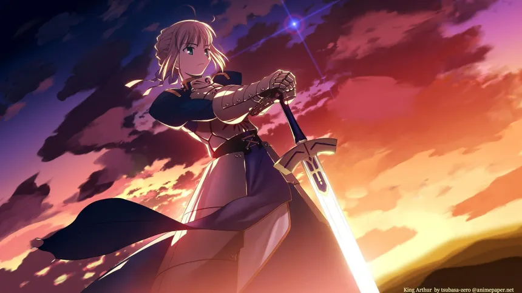Master: Kiritsugu Emiya
Saber, también conocida como Artoria Pendragon o el Rey Arturo, lucha para obtener el Santo Grial y así reescribir el pasado para salvar su reino, Britania. A menudo no está de acuerdo con su Master.
Master

Servant: Saber
Un mago asesino que busca la paz mundial a cualquier costo, incluso sacrificando a seres queridos.
Archer
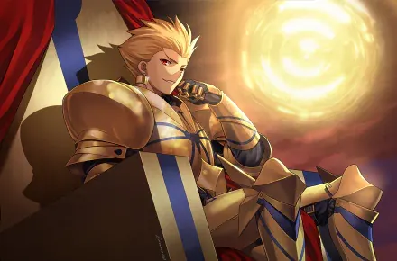Master:Tokiomi Tohsaka
Archer, también conocido como Gilgamesh o Rey de los Héroes, ve el Santo Grial como un tesoro que ya le pertenece y participa en la Guerra por diversión y para evitar que otros Servants le roben lo que ya considera suyo.
Master
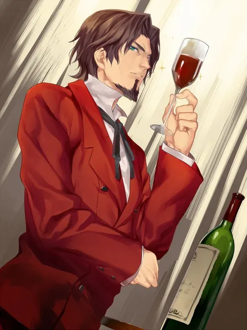Servant: Archer
Un mago aristócrata que valora la tradición y el honor por encima de todo.
Lancer

Master:Kayneth El-Melloi Archibald
Lancer, conocido como Diarmuid Ua Duibhne, lucha principalmente para servir lealmente a su Master. Más adelante, tras una lesión de su Master, lucha también para ayudarlo a recuperar su salud.
Master
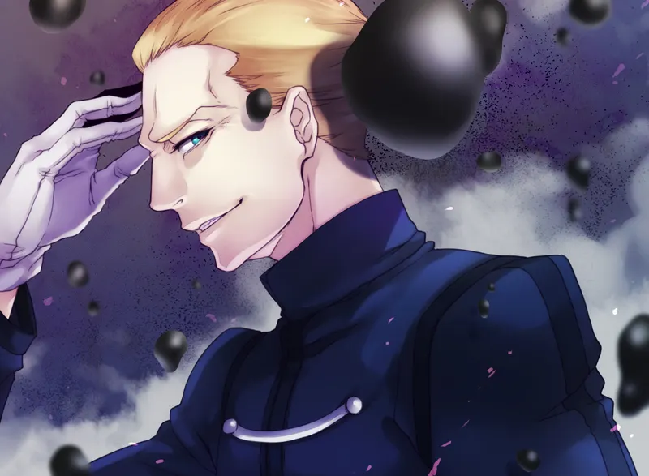Servant: Lancer
Estricto y ambicioso, siempre busca ser el mejor mago y cumplir con sus objetivos sin importar el costo.
Rider
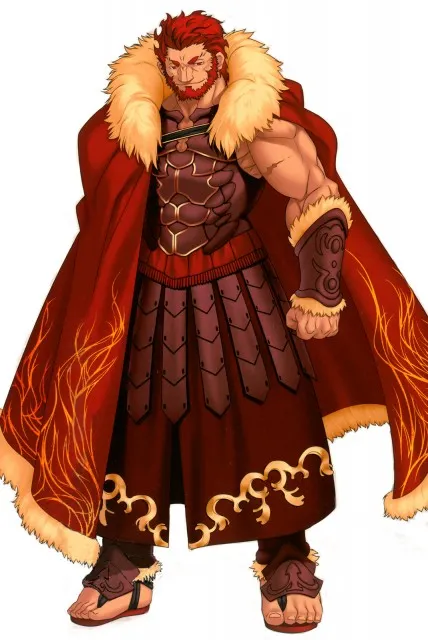Master:Waver Velvet
Rider, conocido como Iskander o Alejandro Magno, tiene ideas sobre la realeza muy diferentes a las de Saber y suele chocar con ella. Lucha en la Guerra del Santo Grial para reincorporarse al mundo moderno.
Master
Servant:Rider
Un joven aprendiz de mago que busca probar su valía y aprender de sus errores mientras crece como persona.
Caster
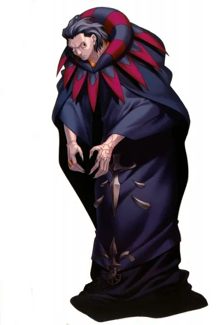Master:Ryuunosuke Uryuu
Caster, también conocido como Bluebeard o Gilles de Rais, es un psicópata obsesionado con asesinar y espera que el Santo Grial resucite a Jeanne d’Arc. Confunde a Saber con Jeanne por su parecido físico.
Master
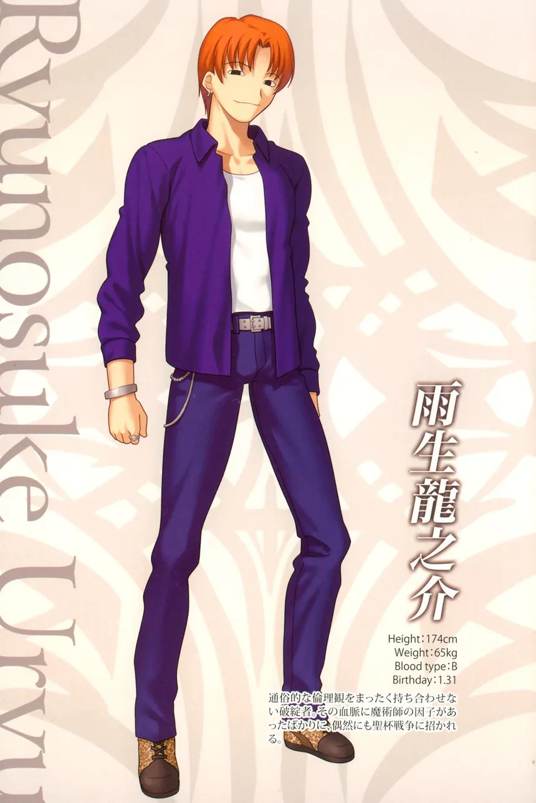Servant:Caster
Un asesino inestable con obsesión por la violencia y la muerte, incapaz de distinguir entre fantasía y realidad.
Berserker
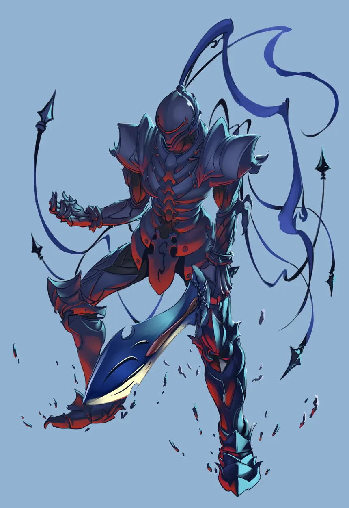Master:Kariya Emiya
Berserker, conocido como Lancelot du Lac o el Caballero Negro, busca la redención y castigo de Saber por sus errores pasados y desea encontrar paz personal.
Master
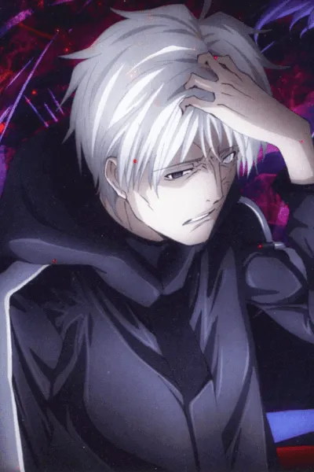Servant:Berserker
Un hombre noble que sacrifica todo por la persona que ama, incluso su propia vida, mostrando gran determinación y sufrimiento.
Assassin
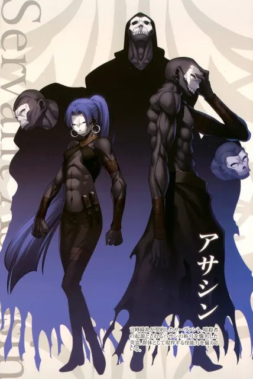Master:Kirei Kotomine
Assassin tiene su personalidad dividida en varias entidades y su deseo es reunificarse para volver a ser completo.
Master
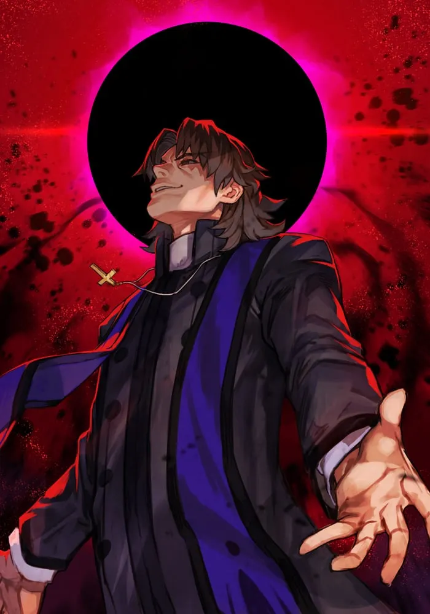Servant:Assassin
Un sacerdote con motivaciones ocultas, disfruta explorando el conflicto y la oscuridad de los demás.